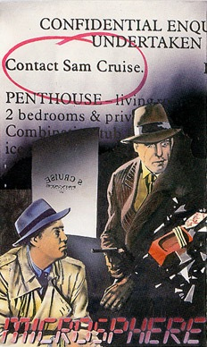
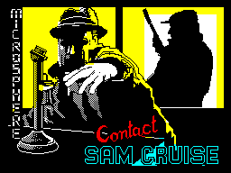
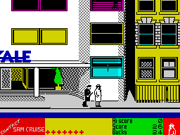

Contact Sam Cruise


{kind=link}

| Publisher: | Microsphere |
| Price: | £7.95 |
| Year: | 1986 |
| Source: | CRASH, Issue 36 |

It was just another day in the office. The sun was hot as it streamed in through the venetian blind, making zebra stripes on the desk. The whole city felt as if it was embalmed and I felt myself drifting off into an uneasy sleep. Suddenly I was awakened by the telephone ringing. It was a foxy dame called Lana. She wanted me to meet her on the top of the Hotel Royal. Said she had something important to tell me. Frankly the whole thing stank but doesn’t everything in this line of work? I took my hat and coat and set off into those mean streets on the case of the Bali Budgie.
Microsphere, the people that brought you Skool Daze and Back To Skool has moved to the world of Raymond Chandler for its latest inspiration.

In the game Sam has to solve a case. By following clues and riddles along the way in true detective fashion he has to try and piece together the facts and solve the mystery. However, snipers and inevitable gangland heavies are out in force to get him. Unconcerned passers-by go about their day to day business as bullets whizz around from the hidden guns.
There are various ways in which Sam can fail in his mission such as running out of money or getting chucked off a very tall building by the Mafia. The Mafia may be fairly easy to avoid, but everything in this game costs money, even walking around. The money acts as your energy level. Sam starts the game with 50 dollars in his pocket but funds can be topped up by somersaulting onto stray dollar bills which occasionally float along the sidewalks.
If Sam gets shot by a sniper, then Sam has to use a first aid kit. Eight of these are supplied at the beginning of the game and once they’re gone then Sam will have to go to the hospital and the case will be over. He never actually gets fatally wounded enough to die, even when he goes flying off the top of a building on the end of a Mafiosa boot!

cool his feet for a while after the cops
discover him next to a corpse
Buildings can be visited and actually walked around inside by Sam. The action inside the building is viewed through the windows blinds can be pulled down and lights switched on and off. If Sam is near a phone then the phone icon lights up on the table at the bottom of the main screen and he can make a call. He only has one phone number at the beginning of the game and phoning his office might provide him with some useful clues. Extra phone numbers can be collected by following up clues along the way.
If Sam gets framed during the game then the police will come along and arrest him. Like all good private detectives Sam carries a large array of disguises with him and if the police are hot on his trail then he can change into one of these at the press of a button. If the police get wise to one of these disguises then the disguise icon will light up at the bottom of the screen at which point he’d better think of something else to do. If he does get arrested the the police are usually satisfied with his claims of innocence and release him on bail.
Points are scored for the amount of time Sam manages to stay on the case. As his money icon goes down so his experience points go up. Useful clues and messages are scrolled along the table at the bottom of the screen and these will help Sam along the way if he gets stuck.
CRITICISM
“Just when I thought The Great Escape was about as far as the arcade adventure could go, this comes along. More plot, better graphics, more atmosphere, more humour, in just about every department this game takes the biscuit as far as I’m concerned. The Chandleresque flavour is just about perfect, best played in a trilby with a packet of lucky strike and a glass of bourbon by your side, this is the next best thing to being Bogart. There are a heck of a lot of keys, and a keyboard overlay or an icon system might have been a big help. What I want to know is how Microsphere can follow this.”
“About once a year Microsphere bring out a game, but when they do appear, they are something to look forward to. Contact Sam Cruise is graphically in the Skool Daze style, but the atmosphere is very eerie and gangster-like. As soon as Sam Cruise’s first messages appeared on the screen, I was sure that something good was coming up. The graphics are superb and the most realistic 3D effects in any of the Microsphere games — there is also lots of colour, well laid out and not too hard on the eyes. Aspiring detectives will love Sam Cruise, and I’m sure it will be a hit.”
“This game is fun to play: there’s so much to it! The gameplay is very good. Contrast is excellent, keeping you occupied is an understatement. Graphics are admirable; lots of colour has been used well, and the Skool Daze type characters are neat. Loads of things like the lights and the disguises have been put together with brilliant attention to detail. I think Microsphere really have got something here.”
COMMENTS
| Control keys: | Q up, A down, O left, P right, B pull/draw blind, D change disguise, F use, G pick up object, I information, K knock/use key at door, L switch on/off light, R forward roll, S aerial somersault, T use telephone, H hang up phone |
| Joystick: | Joystick: Kempston, Cursor, Interface 2 |
| Keyboard play: | Responsive: unusual to begin with, but easy to get the hang of |
| Use of colour: | Easy on the eye |
| Graphics: | Lovely detail |
| Sound: | Spot effects |
| Skill levels: | One |
| Screens: | Twenty or so in a large scrolling playing area |
| General rating: | A highly original atmospheric game |
| Use of computer: | 91% |
| Graphics: | 92% |
| Playability: | 88% |
| Getting started: | 90% |
| Addictive qualities: | 93% |
| Value for money: | 93% |
| Overall: | 93% |